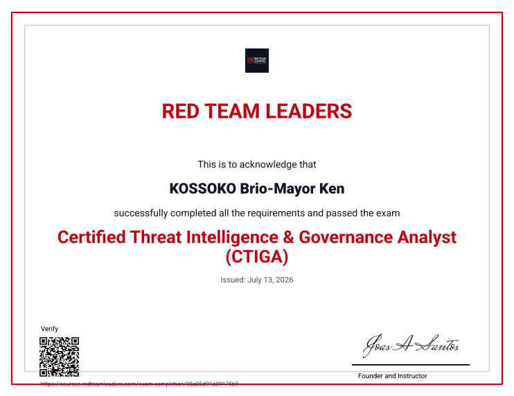
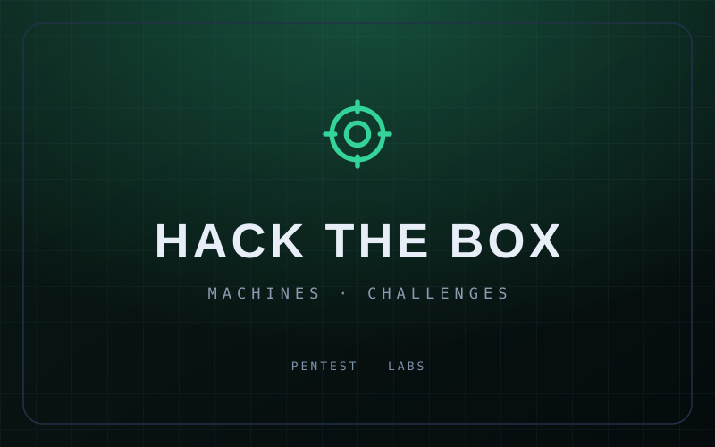
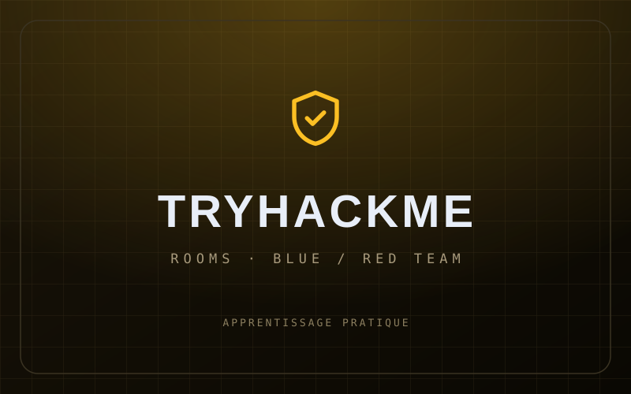
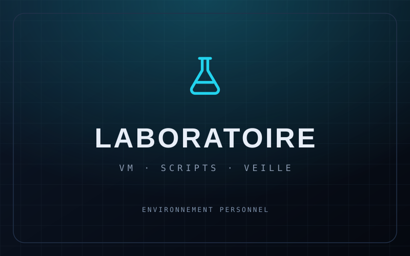
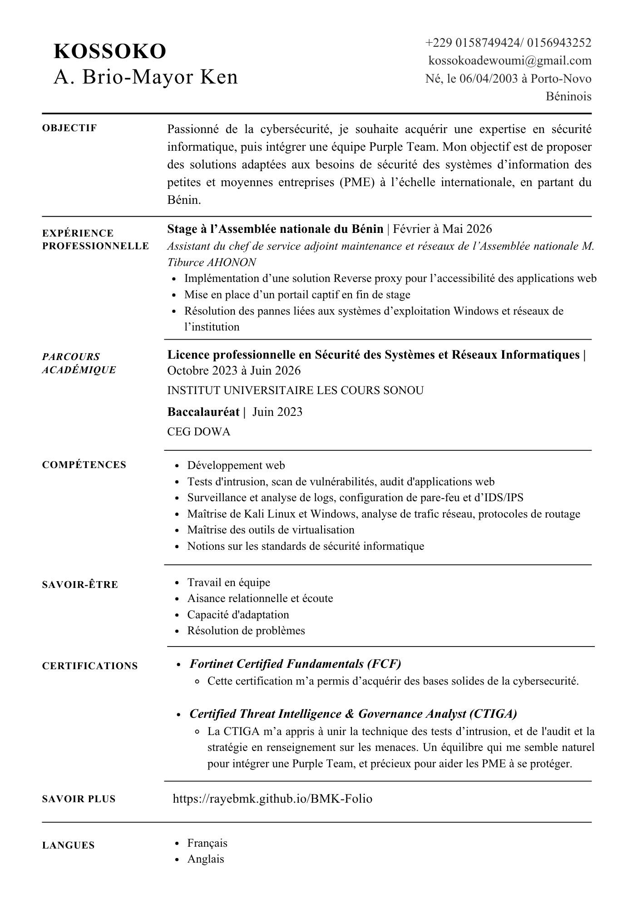

Opérationnel
Systèmes & réseaux
Installer, administrer et dépanner des environnements Windows et Linux, du poste de travail au serveur.
Ouvert aux opportunités
Diplômé en sécurité des systèmes et réseaux
Titulaire d’une licence en sécurité des systèmes et réseaux informatiques (mention Très Bien), je sécurise, administre et dépanne des infrastructures — du poste de travail au serveur. Certifié Fortinet FCF et CTIGA Red Team.
01 — Profil
Administration système, sécurité réseau et pratique offensive : trois facettes complémentaires d’un même métier.
Diplômé d’une licence en sécurité des systèmes et réseaux informatiques (mention Très Bien), j’évolue à la frontière entre l’administration système et la sécurité opérationnelle : durcir un serveur, segmenter un réseau, diagnostiquer une panne, expliquer les bonnes pratiques.
Mon stage de trois mois à l’Assemblée nationale du Bénin m’a confronté à un environnement institutionnel exigeant : administration de serveurs et de postes de travail, application de mesures de sécurité réseau, sensibilisation des utilisateurs et dépannage au quotidien.
Je continue d’élargir le spectre : pratique régulière sur Hack The Box et TryHackMe, et formation en data science, machine learning et deep learning — parce que la détection passe de plus en plus par les données.
02 — Compétences
Des compétences classées par niveau réel d’autonomie, sans sur-promesse.
Installer, administrer et dépanner des environnements Windows et Linux, du poste de travail au serveur.
Sécuriser une infrastructure, analyser une surface d’attaque et pratiquer en laboratoire.
Explorer les usages de la donnée et de l’IA appliqués à la détection et à l’analyse.
Produire des supports clairs pour documenter, former et sensibiliser.
03 — Parcours
Un stage en environnement institutionnel, et un diplôme obtenu avec la mention Très Bien.
Assemblée nationale du Bénin
Systèmes, réseaux et sécurité informatique
04 — Certifications
Cliquez sur le visuel pour ouvrir le certificat en PDF ; le lien du bas renvoie vers la plateforme de l’organisme.

Red Team Leaders
VérifiéCertification orientée Red Team : reconnaissance, exploitation et posture offensive.
Vérifier sur la plateforme — Red Team Leaders (nouvel onglet)Fortinet
VérifiéFortinet Certified Fundamentals in Cybersecurity — menaces, réseaux et sécurité de l’information.
Vérifier sur Fortinet Training — Fortinet Training Institute (nouvel onglet)05 — Labs & projets
Un diplôme ne suffit pas : je m’entraîne régulièrement sur des environnements contrôlés, avec une approche méthodique et documentée.

Machines Linux et Windows, challenges web et élévation de privilèges.
Pratique régulière
Voir — Hack The Box (nouvel onglet)
Rooms offensives et défensives : fondamentaux réseau, web, blue team et red team.
Pratique régulière
Voir — TryHackMe (nouvel onglet)
Environnement virtualisé pour reproduire des scénarios d’attaque et de défense, scripts d’automatisation et veille technologique.
En construction
Voir — mes dépôts GitHub (nouvel onglet)06 — CV
Parcours, certifications et compétences techniques, sur une page — à consulter en ligne ou à télécharger.

PDF · A4 · 1 page
Cybersécurité · Systèmes & réseaux
Licence SSRI mention Très Bien, stage à l’Assemblée nationale du Bénin, certifications CTIGA et Fortinet FCF.
La visualisation s’ouvre dans un nouvel onglet ; le téléchargement enregistre le fichier PDF.
07 — Contact
Je réponds volontiers aux opportunités en cybersécurité, administration système et réseaux. Le plus simple reste l’e-mail.
Bénin